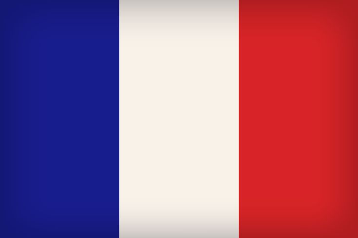
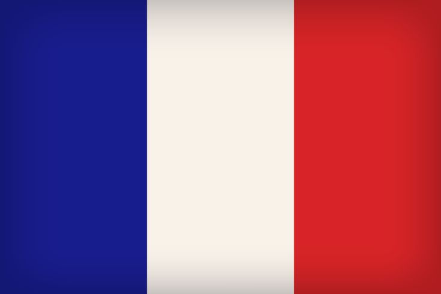
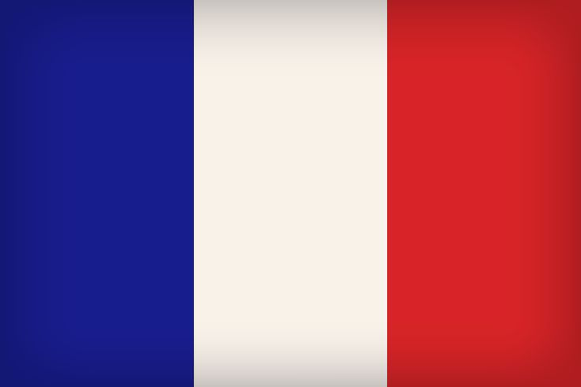

Јас сум Исидора Кузмановска, родена на 18.02.2004, во Битола. Основно образование завршив во ОУ „Гоце Делчев“ - Битола и средно образование во СОУ Гимназија „Јосип Броз Тито“ - Битола. Моето образование го продолжив како студент на Факултетот за Информатички Науки и Компјутерско Инженерство во Скопје, на смер Софтервско Инженерство и Информациски системи.
Како еден важен дел од моето неформално образование можам да го издвојам посетувањето на часови по англиски јазик во приватната школа „English Together“ - Битола, каде се стекнав со нивото C1.1. Покрај ова, го изучував и францускиот јазик во Француската Алијанса во Битола, каде го добив нивото B2. Бев и член во Интеракт Клуб Широк Сокак, во периодот 2018-2023год., каде се стекнав со лидерски и комуникациски вештини.
